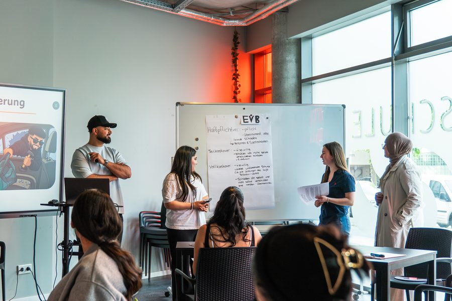

Frag mal deine Eltern nach ihrer Fahrschule.
Viele erzählen dieselbe Geschichte.
Von einem Fahrlehrer, der geschrien hat.
Von Fehlern, die nicht passieren durften.
Von Herzklopfen, schon bevor man eingestiegen ist.
Und manche glauben bis heute: So ist das eben.
Ist es nicht.
Es gehtauch anders.
Fahrlehrer Serband · Offenbach am Main
Ruhe stattGeschrei.

Ich bin Serband. Und bei mir wird nicht geschrien.
Nicht, weil ich mich zusammenreiße. Sondern weil es nichts bringt. Wer Angst hat, lernt nicht. Wer ruhig ist, schon.
Wir fahren sachlich und klar, und zwischendurch wird auch mal gelacht. Fehler sind erlaubt. Aus ihnen lernen wir am meisten.
- RuheKein Druck, kein Anmeckern.
- KlarheitDu weißt immer, woran du bist.
- FreudeFahren darf Spaß machen.
Du bist nichtwie alle.
Manche wollen sofort losfahren. Andere wollen erst verstehen, warum. Manche brauchen Ruhe, andere ein gutes Wort.
Deshalb schauen wir am Anfang gemeinsam, wie du tickst, angelehnt an das Farbmodell von Thomas Erikson: Rot, Gelb, Grün und Blau. Daraus entsteht eine Ausbildung, die zu dir passt.
Dein Fahrlehrer passt sich dir an. Nicht du deinem Fahrlehrer.
Finde deine Farbe
Frage 1 von 4
Kein wissenschaftlicher Test, sondern ein Anfang für unser erstes Gespräch. Richtig kennen lernen wir uns in der ersten Fahrstunde.
MeinVersprechen.
Ich tue alles dafür, dass du deinen Führerschein so schnell und so günstig wie möglich bekommst.
Wie schnell und wie günstig, liegt am Ende auch ein Stück bei dir.
Aber du gehst diesen Weg nicht allein.
Mein Teil
- Ein klarer Plan für jede Stunde
- Ehrliche Rückmeldung, wo du stehst
- Keine Stunde zu viel, keine zu wenig
Dein Teil
- Dranbleiben, auch wenn es mal hakt
- Vorbereitet in die Stunde kommen
- Sagen, wenn dir etwas nicht passt
Die Werkzeugedahinter.
Ein Versprechen braucht mehr als gute Absichten. Deshalb habe ich mich hingesetzt und mir die Werkzeuge gebaut, die ich selbst immer vermisst habe.
Werkzeug 1
Der Fahrlehrer-Kompass
Mein Kompass für deine Ausbildung. Ich arbeite in jeder Stunde damit – du merkst es daran, dass nichts vergessen wird und keine Stunde zu viel oder zu wenig ist.
Fahrlehrer-Kompass
Eine Ampel für jedes Thema
60 Ausbildungsthemen, jedes mit eigener Ampel – geübt an echten Stellen in Offenbach, vom Schlachthof bis Bieber. So sehe ich sofort, was sitzt und was wir noch einmal fahren.
Fahrlehrer-Kompass
Ich weiß, wie du lernst
Vor dem Start beantwortest du ein paar kurze Fragen. Danach weiß ich, wie du am besten lernst – und erkläre dir alles so, dass es bei dir ankommt.
Fahrlehrer-Kompass
Zur Prüfung, wenn es sitzt
Bevor ich dich anmelde, schaut der Kompass auf drei Dinge: mindestens 90 % Ausbildungsstand, alle Sonderfahrten, bestandene Theorie. Kein Bauchgefühl – und keine Stunde zu viel.
Fahrlehrer-Kompass
Schwierige Stellen zum Mitdenken
22 knifflige Situationen – Kreisverkehr, Vorfahrt, Grünpfeil – zeige ich dir als Animation. Du entscheidest, was richtig ist, der passende Paragraf steht gleich dabei.
Werkzeug 2
Die Fahr-Akademie
Deine Lern-App für zwischen den Stunden. Damit kommst du vorbereitet ins Auto und sparst Zeit am Steuer.
Fahr-Akademie
Richtig und falsch im direkten Vergleich
„Verkehr verstehen“ zeigt jede Situation in 3D: einmal so, wie es richtig ist, einmal mit dem typischen Fehler. Die Gefahr wird rot, der StVO-Paragraf steht dabei.
Fahr-Akademie
Echte Prüfungsstrecken, sortiert nach Prüfer
Über 7 Stunden kommentierte Fahrten auf echten Prüfungsstrecken. Ich bin sie selbst gefahren und erkläre jede wichtige Stelle – sortiert nach Prüfer.
Fahr-Akademie
„Hier lag der Fehler“
Bei Fahrten mit Fehlern springst du mit einem Tipp genau an die Stelle, an der es passiert ist. Und die App merkt sich, wo du aufgehört hast.
Fahr-Akademie
In deiner Sprache
Erklärungen und 3D-Szenen gibt es auf Deutsch, Türkçe, English, العربية und Español. Die Videos selbst sind auf Deutsch.
Alle App-Bilder mit Beispieldaten – keine echten Schüler.
DeinWeg.
- 01
Anmelden
Sehtest, Erste-Hilfe-Kurs, Passbild. Wir klären alles in Ruhe.
- 02
Kennenlernen
Deine Farbe, dein Tempo, deine Ziele. Daraus wird dein Plan.
- 03
Theorie
Unterricht und Lernen am Handy, in der Fahr-Akademie siehst du vieles schon vorher.
- 04
Fahren lernen
Erst ruhige Straßen, dann Stadt, Kreuzungen, Kreisverkehre. In deinem Tempo.
- 05
Sonderfahrten
Überland, Autobahn, Dunkelheit. Die Fahrten, die dich wirklich sicher machen.
- 06
Prüfung
Die typischen Strecken kennst du schon. Du steigst ein und fährst einfach.
Kurzer Halt
Wie schnell reagierst du?
Tippe auf die Ampel. Sobald sie grün wird, tippst du so schnell du kannst. Wer zu früh drückt, fährt über Rot.
- Deine Zeit
- –
- Bestzeit
- –
- Reaktionsweg bei 50 km/h
- –
Bestenliste · Top 5
- Wird geladen …
Losgeht's.
Du musst nicht mutig sein, um anzufangen. Du musst nur anfangen.
Meine Fahrlehrerlaubnis
Klasse B und BE
Schaltwagen
Du lernst kuppeln und schalten und darfst später Schalt- und Automatikwagen fahren.
Tipp: Mit der Schlüsselzahl B197 machst du die Prüfung auf Automatik und darfst nach mindestens 10 Schaltstunden und einer kurzen Testfahrt trotzdem Schaltwagen fahren.
Häufige Fragen
Was kostet der Führerschein?
Das hängt vor allem davon ab, wie viele Fahrstunden du brauchst. Genau da setzt mein Versprechen an. Aktuelle Preise und Pakete findest du bei der Fahrschule, über die ich ausbilde.
Schaltung oder Automatik?
Automatik ist einfacher zum Start, Schaltung macht dich flexibler. Mit der Schlüsselzahl B197 bekommst du beides: Prüfung auf Automatik, dazu mindestens 10 Schaltstunden (je 45 Minuten) und eine kurze Testfahrt bei mir – danach darfst du auch Schaltwagen fahren.
Wie lange dauert es?
Das ist bei jedem anders. Die Theorie geht im Intensivkurs recht schnell. Bei der Praxis kommt es darauf an, wie oft du fahren kannst und wie schnell du sicher wirst. Ich sage dir immer ehrlich, wo du stehst.
Was brauche ich für die Anmeldung?
Einen Sehtest, einen Erste-Hilfe-Kurs, ein biometrisches Passbild und deinen Ausweis. Den Antrag bei der Führerscheinstelle besprechen wir gemeinsam.
Ab wann kann ich anfangen?
Du kannst schon vor deinem 17. Geburtstag mit der Ausbildung beginnen. Die Theorieprüfung ist frühestens 3 Monate, die praktische Prüfung frühestens 1 Monat vorher möglich. Ab 17 fährst du mit Begleitung (BF17), ab 18 allein.
Was ist, wenn ich sehr nervös bin?
Dann bist du hier richtig. Wir fangen dort an, wo du dich sicher fühlst, und gehen erst weiter, wenn du bereit bist. Nervosität ist normal und geht vorbei.
Google-Bewertungen · Wort für Wort
Frag nicht mich.
Frag meine Fahrschüler.
Schon bestanden?
Erzähl es weiter.
Eine kurze Bewertung hilft anderen, die gerade dort stehen, wo du einmal standest.
Bewertung schreibenMit der Kamera scannen
Und irgendwann sitzt du allein im Auto.
Ganz ruhig.
Und weißt: Du kannst das.